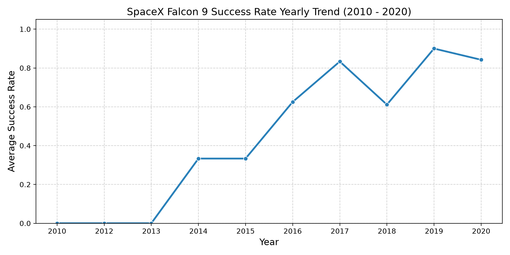
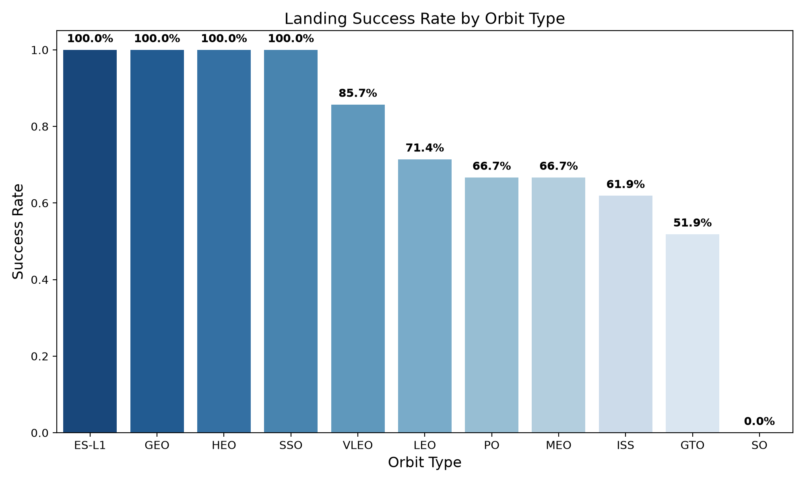
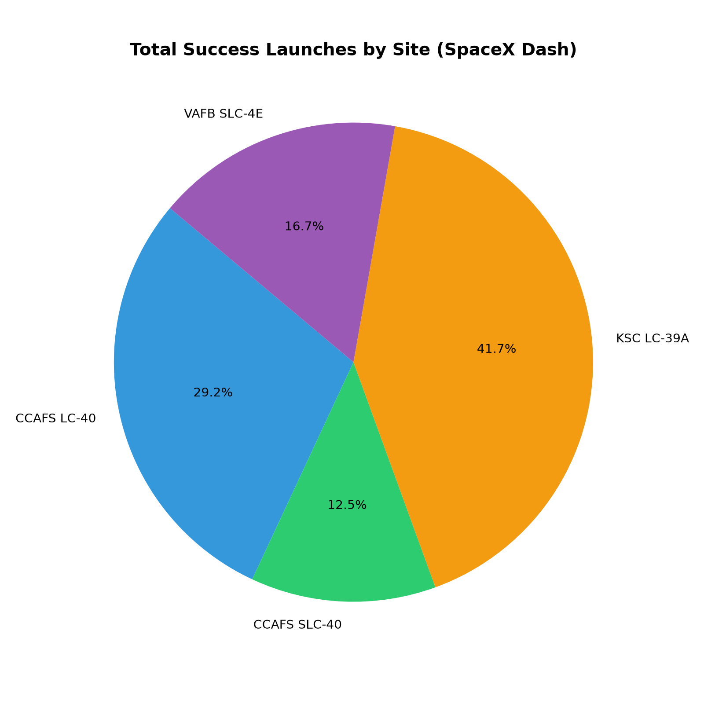
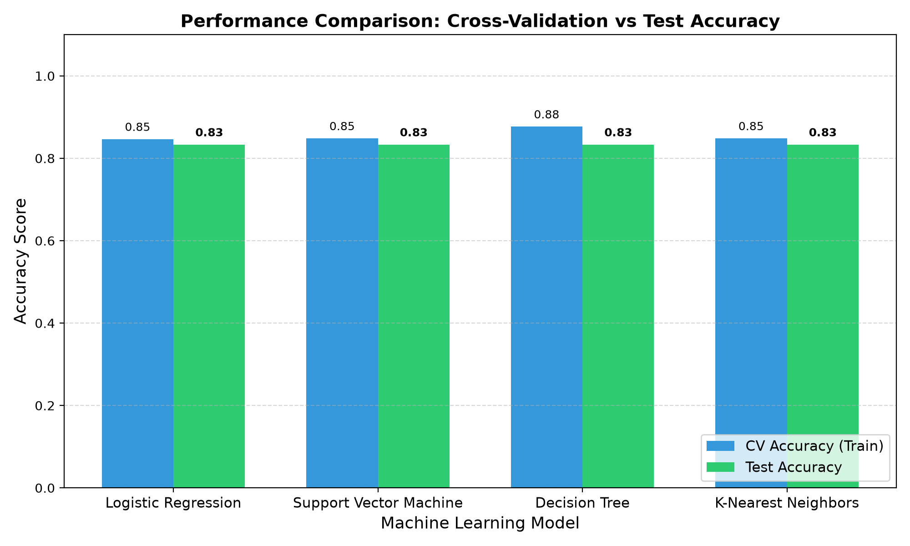
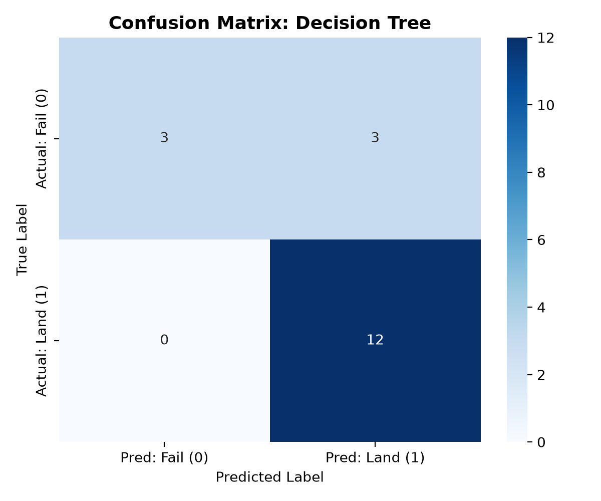

Repositorio GitHub con código completo y cuadernos ejecutados:
https://github.com/neurodeveloper11/spacex-falcon9-capstone
Tradicionalmente, la primera etapa de los cohetes caía al océano como chatarra espacial. SpaceX logró el hito histórico de aterrizar verticalmente sus propulsores tanto en plataformas terrestres (RTLS) como en barcazas robóticas no tripuladas en alta mar (ASDS).
$62M vs $165M
Ahorro de $103 Millones por misión si la primera etapa es reutilizada con éxito.
/v4/launches/past. Normalización de JSON de cargas, núcleos y sitios.BeautifulSoup4 para complementar información de vuelos iniciales.PayloadMass utilizando la media (6,123.5 kg).Se agruparon los estados de aterrizaje de la columna Outcome:
| Resultado Real (Outcome) | Clase Asignada | Conteo |
|---|---|---|
| True ASDS, True RTLS, True Ocean | 1 (Éxito) | 60 |
| False ASDS, False RTLS, False Ocean, None None | 0 (Fallo) | 30 |
Tasa histórica de éxito: 66.67%
my_data1.db con consultas para auditar lanzamientos, cargas por cliente y modos de fallo.Datos Crudos ➔ SQL ➔ Gráficos Seaborn ➔ Mapas Folium ➔ App Plotly Dash
Python 3.13 Folium 0.20 Plotly DashOrbit, LaunchSite, LandingPad, Serial) con pd.get_dummies, generando 83 features numéricas.StandardScaler para garantizar media 0 y varianza 1 en todos los predictores.random_state=2). Blindaje absoluto contra Data Leakage.cv=10) por cada modelo.ES-L1, GEO, HEO y SSO registraron un 100% de éxito.GTO presentó un 52% de éxito debido a la alta velocidad de reentrada atmosférica.
Evolución temporal de la tasa de éxito de aterrizaje (2010-2020)
| Tarea / Consulta SQL | Resultado Clave |
|---|---|
| Sitios de lanzamiento únicos | CCAFS LC-40, CCAFS SLC-40, KSC LC-39A, VAFB SLC-4E |
| Masa total transportada para NASA (CRS) | 45,596 kg |
| Masa promedio transportada por versión F9 v1.1 | 2,534.67 kg |
| Primer aterrizaje exitoso en tierra (Ground Pad) | 2015-12-22 (Misión Orbcomm OG2, Propulsor B1019) |
| Propulsores con éxito en barcaza y masa 4000-6000 kg | F9 FT B1022, F9 FT B1026, F9 FT B1021.2, F9 FT B1031.2 |
| Propulsores con carga máxima (15,600 kg) | Serie Falcon 9 Block 5 (misiones Starlink): B1048.4, B1049.4, etc. |
| Meses con fallos en barcaza en el año 2015 | Enero (01) y Abril (04) en CCAFS LC-40 |
Todas las plataformas se ubican pegadas a la costa atlántica o pacífica, permitiendo trayectorias de lanzamiento seguras hacia el este sobre el océano.

Tasa de éxito de aterrizaje clasificada por tipo de órbita
8050.
Distribución de lanzamientos exitosos por sitio (Plotly Dash)
| Modelo de Clasificación | Mejores Hiperparámetros Optimizados | Accuracy CV (Train) | Accuracy Conjunto de Prueba |
|---|---|---|---|
| Decision Tree | max_depth=8, criterion='gini', min_samples_leaf=2 |
87.68% | 83.33% |
| Support Vector Machine (SVM) | C=1.0, gamma=0.0316, kernel='sigmoid' |
84.82% | 83.33% |
| K-Nearest Neighbors (KNN) | n_neighbors=10, p=1 (Manhattan) |
84.82% | 83.33% |
| Logistic Regression | C=0.01, penalty='l2', solver='lbfgs' |
84.64% | 83.33% |

Precisión en CV: 87.68% | Precisión en Test: 83.33%

Matriz de Confusión en conjunto de prueba (Decision Tree)
IF P(Landing=1) < 0.60 ➔ Ofertar licitación agresiva ($85M USD)
IF P(Landing=1) >= 0.60 ➔ Ofertar servicio premium o disponibilidad garantizada
Esta estrategia optimiza la probabilidad de ganar licitaciones maximizando el margen de beneficio corporativo.
spacex_launch_geo.html) que pueden ser inspeccionados sin servidor activo.